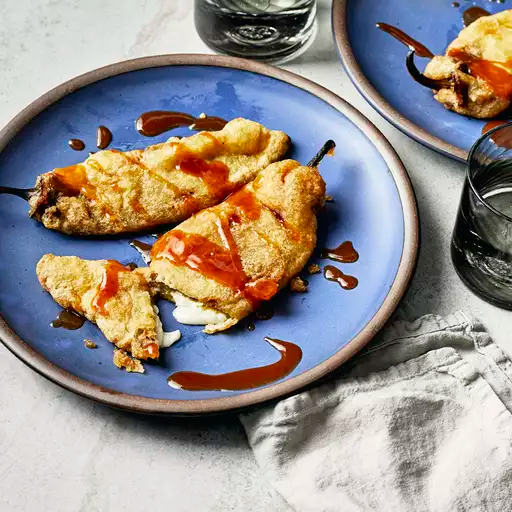

Chiles Rellenos

Description
Traditional Mexican dish made from roasted poblano peppers stuffed with cheese, then coated in a fluffy egg batter and fried until golden brown.
Ingredients
- 6 fresh Anaheim chile peppers
- 1 (8 ounce) package queso asadero (white Mexican cheese), cut into 3/4-inch thick strips
- 2 large eggs, separated
- 1 teaspoon baking powder
- ¾ cup all-purpose flour
- 1 cup vegetable shortening for frying
Steps
- Preheat the oven broiler; set the oven rack about 6 inches below the heat source. Line a baking sheet with aluminum foil.
- Place peppers onto the prepared baking sheet and broil until skins are blackened and blistered, about 10 minutes. Use tongs to rotate peppers often to char all sides. Place blackened peppers into a bowl and tightly seal with plastic wrap. Allow peppers to steam as they cool, about 15 minutes.
- Remove skin from peppers, then cut a slit down the long side of each one to remove seeds and core. Rinse peppers inside and out and pat dry with paper towels. Stuff peppers with strips of cheese.
- Whisk egg yolks and baking powder in a bowl until combined. Beat egg whites with an electric mixer in a separate bowl until stiff peaks form. Gently fold beaten whites into the yolk mixture. Place flour into a separate shallow bowl.
- Melt vegetable shortening in a skillet over medium heat. Roll each stuffed pepper in flour, tap off excess flour, and dip into the egg mixture to coat both sides. Gently lay coated peppers into the hot shortening. Fry peppers until lightly golden brown and cheese has melted, about 5 minutes per side.
Main Page